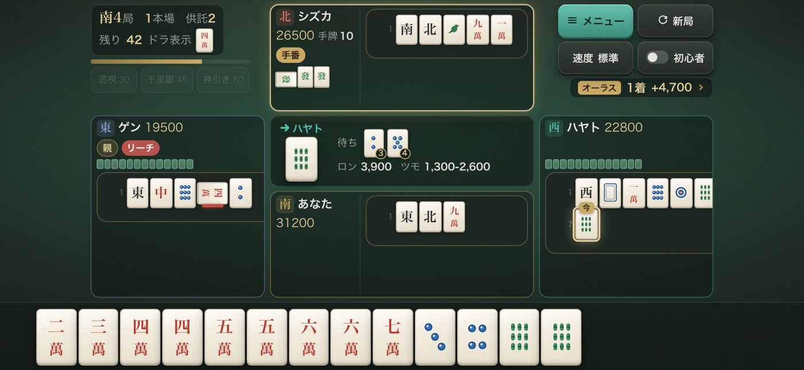
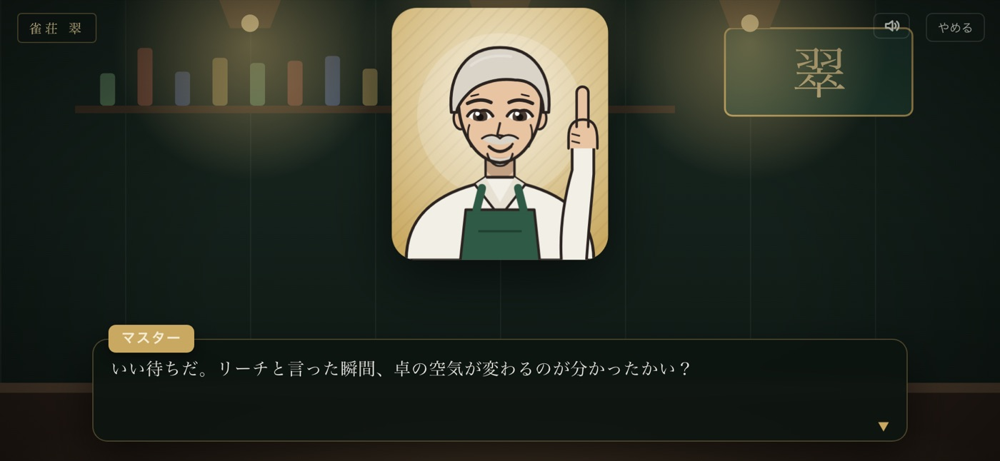
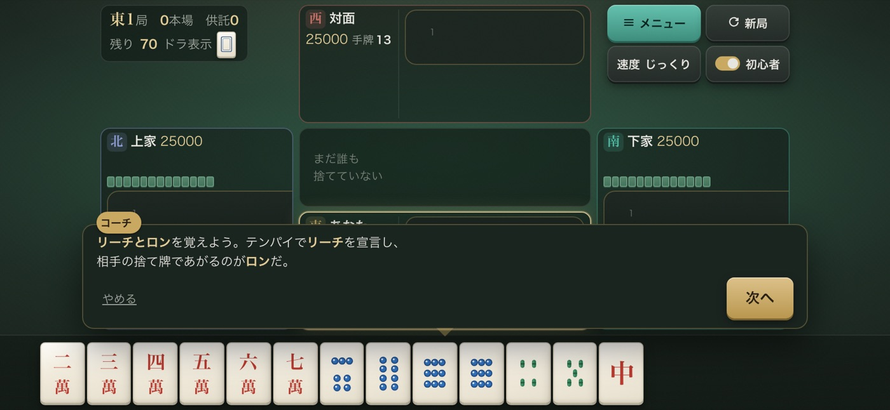
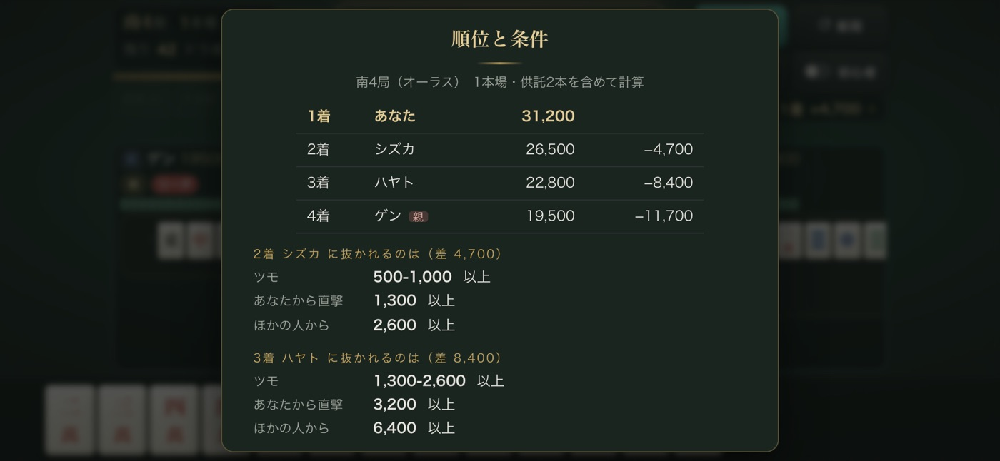
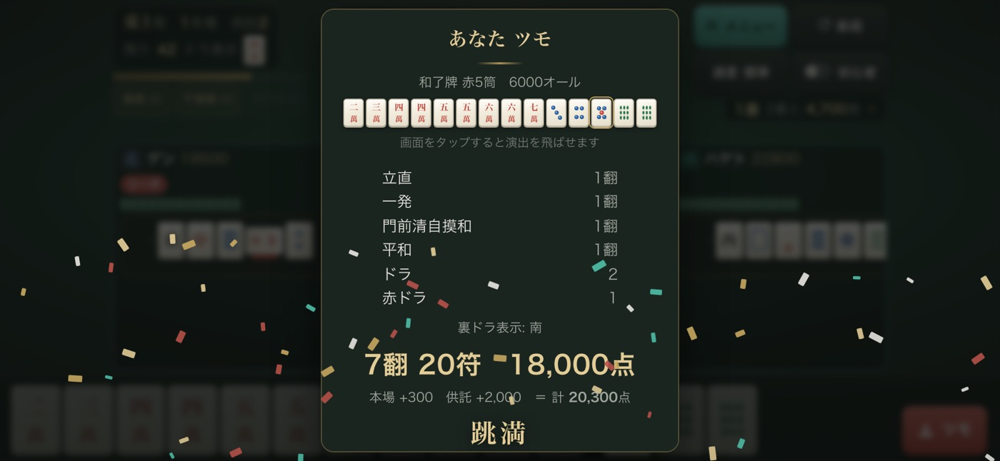
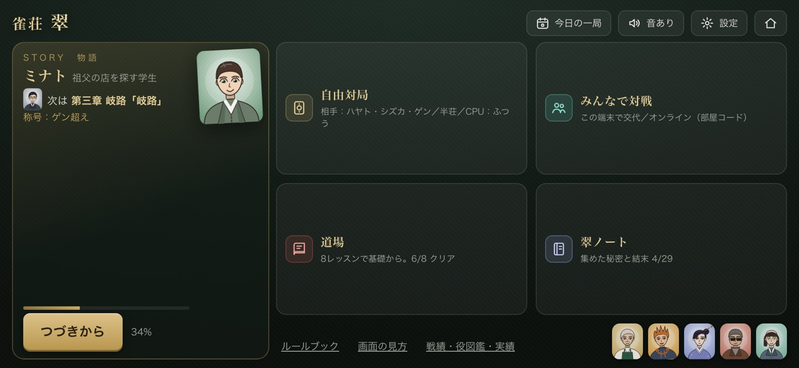
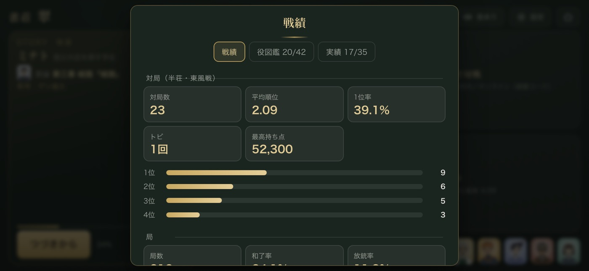

物語で覚える
第0章で牌の見方・ツモと捨て牌・あがりの形を、実際に打ちながら覚えます。章を進めるごとに、役・押し引き・読みへ。
Mahjong Parlor ／ 4人打ち麻雀
駅裏の小さな雀荘「翠」。店主に牌の見方から教わり、常連と打ち、やがて街の卓へ。物語で学べる、常連と打てる、みんなで打てる麻雀です。

ルールを知らなくても大丈夫。知っている人には、ちゃんと本格的。
第0章で牌の見方・ツモと捨て牌・あがりの形を、実際に打ちながら覚えます。章を進めるごとに、役・押し引き・読みへ。
符計算・赤ドラ・一発・裏ドラ・槍槓・ダブロン。途中流局・流し満貫・責任払い・西入・喰いタンは設定で切り替えられます。
ブラウザで開くだけ。ホーム画面に追加すればアプリのように起動し、ひとり用はオフラインでも遊べます。記録は端末の中だけ。
第一部は新入りとして、早打ちのハヤト、守りのシズカ、勝負師ゲンたちと卓を囲む日々。第二部『翠、継ぐ者』では弟子を持ち、街の雀荘対抗戦から翠杯へ。選んだ道で結末が変わります。

覚えることが多い麻雀も、画面が一つずつ教えてくれます。慣れたら切り替えて、すっきりした卓で。

牌のきほん・はじめての和了・リーチとロン・鳴きと守り・役とドラ・フリテン・点数の見方・七対子。卓の上で、手を動かして覚えます。
テンパイすると待ち牌と残り枚数、あがった時の点数を表示。役がない待ちは「役なし」と警告し、フリテンも知らせます。

右上の順位をタップすると、この局のあがりで順位が入れ替わる条件を計算。ツモ・直撃・ほかから、本場と供託も含めて。

おすすめの捨て牌と「今やること」を案内。あがりの画面では役の名前をタップすると説明が出ます。局のふりかえりで全員の手牌も見られます。
常連3人と半荘・東風戦。CPUの強さは やさしい／ふつう／つよい／鬼。相手も選べます。
部屋コードでオンライン対戦（空いた席はCPU）。1台の端末で交代しながら遊ぶこともできます。
毎日同じ配牌で一局勝負。自己ベストと連続日数が残ります。
順位・和了率・放銃率・立直率などの戦績と、あがった役の図鑑（42種）、実績（35個）。
局が終わったら、全員の手牌・鳴き・待ち・打牌の流れを確かめられます。
同じ相手との記録（リーチ率・鳴き率・和了率）で、相手の癖が見えてきます。


4人打ち半荘（東風戦も可）。ツモ・ロン、立直（一発・裏ドラ）、ポン・チー・カン（暗槓・加槓・大明槓）、槍槓、ダブロン、フリテン。
符計算あり、切り上げ満貫なし、役満は複合しても役満1つ分。本場・供託・トビ。点数の計算は点数表と機械的に突き合わせています。
赤ドラ、途中流局（九種九牌・四風連打・四家立直・四槓散了）、流し満貫、責任払い、延長（西入）、アガリやめ、喰いタン。
自動でロン・ツモ、鳴きの確認（役の見込みがある時だけ）、リーチ後の自動ツモ切り、二段タップ、牌を大きめ、速度3段階、卓の色4色。
無料です。広告・課金・アカウント登録はありません。
ホームの「物語をはじめる」から。第0章で、牌の見方・ツモと捨て牌・あがりの形を実際に打ちながら覚えます。道場の8レッスンでも基礎を学べます。
横画面で遊ぶ作りです。ブラウザの共有メニューから「ホーム画面に追加」すると、アプリのように全画面で起動し、ひとり用はオフラインでも遊べます。
物語の進み・戦績・設定は、すべて端末の中（ブラウザの保存領域）にあります。外部には送りません。別の端末へは「引き継ぎコード」で移せます。
ひとり用と「1台で交代」は通信しません。「みんなで対戦」のオンラインを選んだ時だけ、相手とつながるための通信をします。詳しくはプライバシーポリシーへ。